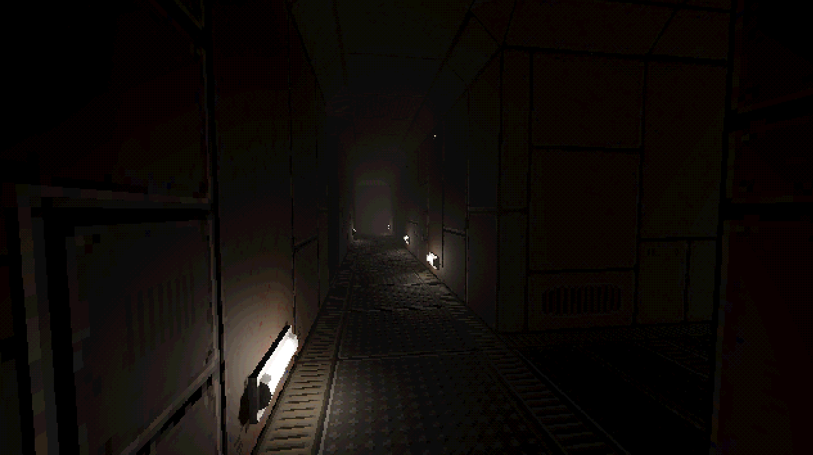

Procedurally generated horror experience

Site 23 is a procedurally-generated horror environment focused on exploration, atmosphere, and emergent storytelling. The experience is built to generate tension through layout variations, lighting, and adaptive encounters.